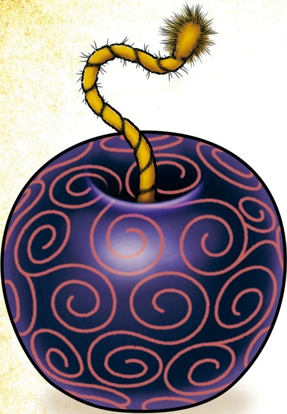

Personajes
Monkey D. Luffy (モンキー・Ｄ・ルフィ Monkī Dī Rufi?), más conocido como Luffy «Sombrero de Paja» (麦わらのルフィ Mugiwara no Rufi?), es el protagonista principal de la serie de manga y anime One Piece. Es el capitán y fundador de los Piratas de Sombrero de Paja así como un de los Cuatro Emperadores que gobiernan los mares del Nuevo Mundo. Comió una fruta del diablo llamada fruta Gomu Gomu, que le convirtió en un hombre de goma. Además de esto, posee varias habilidades que le hacen ser un pirata más que especial; un gran ejemplo de ello es la capacidad de usar el haoshoku haki ―que sólo lo posee una persona dentro de un millón― y poseer también los otros dos tipos de haki.
Luffy pertenece a una familia plagada de personajes conocidos mundialmente: es hijo del líder del Ejército Revolucionario y criminal más buscado del mundo, Monkey D. Dragon; nieto del héroe de la Marina y anterior vicealmirante Monkey D. Garp, hermano adoptivo del conocido pirata Ace "Puño de Fuego" ―antiguo comandante de la segunda división de los Piratas de Barbablanca―, así como del oficial general del Ejército Revolucionario, Sabo. Su objetivo en la vida es convertirse en el próximo Rey de los Piratas, encontrar el legendario tesoro conocido como el "One Piece", que perteneció al anterior Rey de los Piratas Gol D. Roger, y conquistar el Nuevo Mundo liderando una tripulación formada por grandes piratas.
Como fundador y capitán de los Piratas de Sombrero de Paja, es el primer miembro que compone la tripulación, así como uno de sus tres principales combatientes. Luffy fue uno de los once piratas novatos conocidos como los "los Once Supernovas" junto al espadachín de su tripulación Roronoa Zoro y, con ello, uno de los once piratas con una recompensa superior a 100.000.000. Posteriormente su recompensa subió a 1.500.000.000 tras los hechos acaecidos en Whole Cake Island y actualmente cuenta con una recompensa de 3.000.000.000 como consecuencia de todos los acontecimientos acaecidos en el asalto a Onigashima.
Luffy se ha ganado una enorme reputación en todo el mundo por causar problemas incluso entre los Siete Guerreros del Mar y la Marina, cometiendo crímenes y acciones que se consideran amenazadoras contra el Gobierno Mundial.
Roronoa Zoro (ロロノア・ ゾロ Roronoa Zoro?), conocido como El Cazador de Piratas (海賊狩り Kaizoku Gari?), es el primer pirata que se unió a Monkey D. Luffy, y el principal combatiente de los Piratas de Sombrero de Paja,uno de sus dos espadachines y uno de los oficiales principales de la Gran Flota de Sombrero de Paja, así como un antiguo cazarrecompensas.
Nacido en el East Blue, Zoro es hijo de Tera y Roronoa Arashi, nieto de Shimotsuki Furiko y Roronoa Pinzoro, y sobrino nieto de Shimotsuki Ushimaru, lo que le convierte en descendiente matrilineal tanto de la familia Shimotsuki del País de Wano como del legendario samurái Shimotsuki Ryuma. Fue el primer miembro en unirse a la tripulación,[16] y es considerado parte del Trío Monstruoso (怪物三人組 Kaibutsu San-ningumi?) junto a Luffy y Sanji. Su sueño es convertirse en el mejor espadachín del mundo. Zoro también es considerado uno de los Once Supernovas que forman parte de «la peor generación».
Obtuvo su primera recompensa de 60.000.000 tras el arco de Arabasta. Más tarde aumentó a 120.000.000 tras el incidente de Enies Lobby, y de nuevo a 320.000.000 tras el arco de Dressrosa. Tras el asalto a Onigashima, su recompensa aumentó a 1.111.000.000, siendo la segunda más alta de la tripulación solo superada por la de Luffy.
Sanji (サンジ Sanji?), conocido como Pierna Negra (黒脚 Kuro Ashi?) y nacido como Vinsmoke Sanji (ヴィンスモーク・サンジ Vinsumōku Sanji?),[3] es el cocinero de los Piratas de Sombrero de Paja, así como uno de los oficiales principales de la Gran Flota de Sombrero de Paja. Es el quinto miembro de la tripulación, y el cuarto en unirse. Él nació en el North Blue, siendo el primer tripulante en no ser originario del East Blue.
Nacido como el cuarto hijo de la familia Vinsmoke,[15] y por ende como uno de los príncipes del Reino de Germa, Sanji se exilió de su país y renegó de su familia, yéndose al East Blue y pasando a trabajar como cocinero en el Baratie, hasta que decidió unirse a la banda. Es considerado parte del Trío Monstruoso (怪物三人組 Kaibutsu San-ningumi?) junto a Luffy y Zoro; y, como tal, es uno de los combatientes más fuertes de la tripulación. Su sueño es encontrar el mar legendario conocido como All Blue.
Después de los acontecimientos del arco de Whole Cake Island obtuvo una recompensa de 330.000.000 siendo así la tercera mas alta de la tripulación, superada solo por la de Jinbe y Luffy. A pesar de haber renunciado al apellido de su familia, el Gobierno Mundial le sigue reconociendo como parte de esta, estando su nombre de nacimiento en su cartel de recompensa.
Actualmente posee una recompensa de 1.032.000.000 que obtuvo después de los acontecimientos del arco del País de Wano, siendo la cuarta recompensa más alta de la tripulación superada por la de Luffy, Zoro y Jinbe.
Nami (ナミ Nami?), apodada Gata Ladrona (泥棒猫 Dorobō Neko?), es una pirata y la navegante de los Piratas del Sombrero de Paja , así como una de los oficiales principales de la Gran Flota de Sombrero de Paja. Es el tercer miembro de la tripulación y la segunda en unirse, haciéndolo oficialmente durante el arco de Arlong Park.
Ella era anteriormente un miembro de los Piratas de Arlong e inicialmente se unió a los de Sombrero de Paja con el fin de robarles, pero se unió oficialmente tras rebelarse contra Arlong y su posterior derrota a manos de Luffy. Actualmente posee una recompensa de 366.000.000.
Usopp (ウソップ Usoppu?) es el francotirador de los Piratas de Sombrero de Paja y uno de los oficiales principales de la Gran Flota de Sombrero de Paja. Es el cuarto miembro de la tripulación y el tercero en unirse oficialmente. A pesar de abandonar la banda en el arco de Water 7, se volvió a unir en el arco del regreso a Water 7.
Es proveniente de la villa Syrup en el East Blue. Ahí ejerció como capitán de los Piratas de Usopp, pero tras los eventos del arco de Villa Syrup, se unió a los Sombrero de Paja. Su sueño es convertirse en un valiente guerrero de los mares como su padre. Su recompensa actual es de 500.000.000.
Tony Tony Chopper (トニートニー・チョッパー Tonī Tonī Chopā?) es el médico de los Piratas de Sombrero de Paja, así como uno de los oficiales principales de la Gran Flota de Sombrero de Paja. Es un reno que comió la fruta Hito Hito de la isla de Drum. Él es el sexto miembro de la tripulación y el quinto en unirse a ella.
Nico Robin (ニコ・ロビン Niko Robin?), también conocida por sus epítetos: Niña Demonio (悪魔の子 Akuma no Ko?) y La Luz de la Revolución (革命の灯 Kakumei no Tomoshibi?) es la arqueóloga de los Piratas de Sombrero de Paja, así como una de los oficiales principales de la Gran Flota de Sombrero de Paja. Es el séptimo miembro de la tripulación y el sexto en unirse, haciéndolo al final del arco de Arabasta.
Es introducida como una de los antagonistas secundarios más destacados de la saga de Arabasta siendo la vicepresidenta de Baroque Works y la mano derecha de Crocodile. Sin embargo, luego de ser salvada por Monkey D. Luffy de morir a manos de Crocodile y la posterior derrota del ex Señor de la Guerra del Mar se une a la tripulación. Dejó temporalmente a la banda durante el arco de Water 7, pero se reincorporó al final del arco de Enies Lobby tras la derrota del CP9 a manos de los Piratas de Sombrero de Paja.
Su sueño es conocer la verdadera historia investigando en los poneglyphs. Actualmente ofrecen una recompensa de 930.000.000 por su cabeza, siendo la quinta más alta de toda su tripulación.
Es la única superviviente del Clan de Ohara, sucediendo a todos sus predecesores como arqueóloga, y fue la mano derecha del jefe de la organización criminal Baroque Works bajo el alias de Miss All Sunday (ミス・オールサンデー Misu Ōrusandē?). También consumió la fruta Hana Hana.
Debido a que es una arqueóloga y como la única sobreviviente del Incidente de Ohara, el Gobierno Mundial puso una recompensa de 79.000.000 por su cabeza con apenas ocho años de edad siendo perseguida incansablemente durante veinte años bajo el pretexto de haber hundido seis buques de guerras (usándola como tapadera de la deserción de Jaguar D. Saul).
.Brook (ブルック Burukku?), conocido como Soul King (ソウルキング Souru Kingu?), es el músico de los Piratas de Sombrero de Paja, uno de sus dos espadachines y uno de los oficiales principales de la Gran Flota de Sombrero de Paja. Es el noveno miembro de la tripulación y el octavo en unirse, haciéndolo al final del arco de Thriller Bark.
Brook consumió la fruta Yomi Yomi, que le permitió volver a la vida después de la muerte una vez. Brook aprendió con el tiempo a aprovechar más profundamente los poderes de su fruta del Diablo, dándole un control significativo sobre su propia alma y las almas de los demás.
Originario del West Blue, Brook ejerció de guardia real de un reino, y posteriormente se haría miembro de los Piratas Rumbar. Murió y resucitó gracias al poder de su fruta. Sin embargo, debido al tiempo que tardó su alma en encontrar su cuerpo, quedó reducido a un esqueleto, conservando intacto únicamente su afro. Brook vagó solo por el Florian Triangle durante cincuenta años, conociendo finalmente a Luffy y sirviendo como aliado de los Sombrero de Paja durante el arco de Thriller Bark antes de unirse oficialmente a la tripulación. Su sueño es reunirse con su viejo amigo Laboon en la Reverse Mountain, donde vive con Crocus.
Su primera recompensa como miembro de los Piratas Rumbar fue de 33.000.000. Más tarde aumentó a 83.000.000 tras el arco de Dressrosa. Tras el asalto a Onigashima, su recompensa aumentó a 383.000.000.
Franky (フランキー Furankī?), apodado el Hombre de Hierro (鉄人 tetsujin?), es el carpintero naval de los Piratas de Sombrero de Paja y uno de los oficiales principales de la Gran Flota de Sombrero de Paja. Es el octavo miembro de la tripulación y el séptimo en unirse, haciéndolo al final del Arco del regreso a Water 7.
Nacido como Cutty Flam (カティ・フラム Kati Furamu?) y originario del South Blue, Franky fue un miembro de los Tom's Workers, hasta que un incidente que dañó su cuerpo le requirió convertirse en un cyborg para curarse. Posteriormente se convertiría en el líder de la familia Franky, un grupo de cazarrecompensas y desmanteladores de barcos, adoptando su nombre actual para ocultar su identidad.
Franky y sus seguidores eran originalmente enemigos de los Sombrero de Paja al principio del arco de Water 7, hasta que las circunstancias les obligaron a convertirse en aliados al final del mismo arco y del arco de Enies Lobby. El sueño de Franky es crear un barco y circunnavegar el mundo con él, y construyó el Thousand Sunny y se unió a los Piratas de Sombrero de Paja para cumplir su sueño.
Obtuvo una recompensa de 44.000.000 por su participación en el incidente de Enies Lobby. Más tarde aumentó a 94.000.000 tras el arco de Dressrosa. Tras el asalto a Onigashima, su recompensa aumentó a 394.000.000.
Jinbe el Caballero del Mar (海侠のジンベエ Kaikyō no Jinbē?) es el timonel de los Piratas de Sombrero de Paja y uno de los oficiales principales de la Gran Flota de Sombrero de Paja, siendo el décimo miembro de la banda y el noveno en unirse. Es un gyojin tiburón ballena, que sirvió como antiguo capitán de los Piratas del Sol y como miembro de los Siete Señores de la Guerra del Mar.
Su nombre fue mencionado por primera vez por Yosaku cuando explicó el sistema de los Siete Señores de la Guerra del Mar. Sin embargo, fue introducido mucho más tarde en el arco de Impel Down. Renunció a su título como uno de los Siete Señores de la Guerra del Mar en la Batalla de Marineford, aliándose a los Piratas de Barbablanca. Durante la guerra formó una amistad con Monkey D. Luffy, y más tarde se alió con él para evitar el golpe de estado de los Nuevos Piratas Gyojin a la familia Neptune y al Reino de Ryugu. Incluso fue invitado a unirse a los Piratas de Sombrero de Paja, pero declinó debido a que aún estaba afiliado a Big Mom; sin embargo, afirmó que una vez termine sus asuntos pendientes él aceptaría y se uniría a la tripulación.
Tras los hechos ocurridos en Whole Cake Island y finalizar sus cabos sueltos, Jinbe se rebeló contra la tripulación de Linlin y decidió ayudar a los de Sombrero de Paja a escapar de sus garras. Formó parte de una alianza con el equipo de recuperación de Sanji y los Piratas Fire Tank con el objetivo de asesinar a Big Mom, abandonando oficialmente su tripulación durante la boda fallida de Sanji y Charlotte Pudding.
Su primera recompensa fue de 76.000.000. Con el tiempo, tras convertirse en el capitán de los Piratas del Sol, su recompensa se elevó a 250.000.000. Tras abandonar su puesto como uno de los Siete Señores de la Guerra del Mar, su recompensa subió nuevamente a 438.000.000. Tras unirse definitivamente a los Piratas de Sombrero de Paja y por participar en el asalto a Onigashima, su recompensa fue incrementada a 1.100.000.000.
Akuma no mi
Es el más común de los tres tipos, las frutas del diablo de tipo paramecia otorgan a su consumidor capacidades físicas sobrehumanas o raras, tales como la generación de ondas de choque o la de marcar objetivos. Otras frutas del diablo alteran el cuerpo de tal forma que lo convierten en goma o en espadas, o alteran el cuerpo de la gente del entorno haciendo que puedan levitar o convertirles en juguetes. Por último, hay frutas que otorgan la habilidad de producir y manipular algunos tipos de sustancias como la cera, el veneno o fluidos como secrecion nasal.
Awa Awa no Mi
La fruta Awa Awa (アワアワの実 Awa Awa no Mi, lit. «Fruta Burbuja Burbuja») una fruta del diablo de tipo paramecia que le permite al consumidor producir y controlar las burbujas de jabón transformándole en un humano jabón.Bara Bara no Mi
La fruta Bara Bara (バラバラの実 Bara Bara no Mi, lit. «Fruta Parte Parte») es una fruta del diablo de tipo paramecia que le otorga al consumidor la capacidad de dividir su cuerpo en pedazos y controlar dichas piezas como desee.Gomu Gomu no Mi
La fruta Gomu Gomu (ゴムゴムの実 Gomu Gomu no Mi, lit. «Fruta Goma Goma»), originalmente conocida como fruta Hito Hito: modelo Nika (ヒトヒトの実 モデル“ニカ” Hito Hito no Mi, Moderu: Nika)Ope Ope no Mi
La fruta Ope Ope (オペオペの実 Ope Ope no Mi, lit. «Fruta Operación Operación») es una fruta del diablo de tipo paramecia la cual convierte al consumidor en un humano libre modificadorJiki Jik no Mi
LLa fruta Jiki Jiki (ジキジキの実 Jiki Jiki no Mi, lit. «Fruta Magnetismo Magnetismo»)[1] es una fruta del diablo de tipo paramecia que le permite a su consumidor manipular campos magnéticos.Mero Mero no Mi
La fruta Mero Mero (メロメロの実 Mero Mero no Mi, lit. «Fruta Enamorar Enamorar») es una fruta del diablo de tipo paramecia que permite realizar una serie de ataques que implican pensamientos de lujuria o perversión hacia el consumidor para transformar a los oponentes en piedra.Ito Ito no Mi
La fruta Ito Ito (イトイトの実 Ito Ito no Mi?, lit. «fruta Hilo Hilo o Hiladora») es una fruta del diablo de tipo paramecia que permite a quien la consuma generar y manipular los hilos, transformándolo en un humano hilo
Hana Hana no Mi
La fruta Hana Hana (ハナハナの実 Hana Hana no Mi, lit. «Fruta Flor Flor») es una fruta del diablo de tipo paramecia que le brinda a su consumidor la capacidad de «florecer» cualquier parte de su cuerpo en cualquier superficieKage Kage no Mi
La fruta Kage Kage (カゲカゲの実 Kage Kage no Mi, lit. «Fruta Sombra Sombra») es una fruta del diablo de tipo paramecia que otorga al consumidor la habilidad de manifestar y controlar las sombras así como otorgarles una forma tangible y física, convirtiéndole en un señor de las sombras.Yomi Yomi no Mi
La fruta Yomi Yomi (ヨミヨミの実 Yomi Yomi no Mi, lit. «Fruta Renacer Renacer») es una fruta del diablo de tipo paramecia que mejora el alma del consumidor hasta el punto de que puede volver a la vida luego de morir una vez.Doru Doru no Mi
La fruta Doru Doru (ドルドルの実 Doru Doru no Mi, lit. «Fruta Vela Vela») es una fruta que hace que el cuerpo pueda crear cantidades ilimitadas de cera y fabricar objetos.
Baku Baku no Mi
La fruta Baku Baku (バクバクの実 Baku Baku no Mi, lit. «Fruta Come Come») es una fruta del diablo de tipo paramecia que permite al consumidor comerse cualquier cosa y transformar su cuerpo en aquello que haya comido.
Sube Sube no Mi
La fruta Sube Sube (スベスベの実 Sube Sube no Mi, lit. «Fruta Liso Liso») es una fruta del diablo de tipo paramecia que convierte la piel de quien la consume en tersa y lisa, lo que causa que los impactos, pinchazos o cortes se deslicen cuando entran en contacto con esta,Kiro Kiro no Mi
La fruta Kiro Kiro (キロキロの実 Kiro Kiro no Mi, lit. «Fruta Kilo Kilo») es una fruta del diablo de tipo paramecia que permite a quien se la coma cambiar a voluntad su peso corporal, de uno a 10.000 kilos, sin aumentar su volumen corporal.
Bomu Bomu no Mi
La fruta Bomu Bomu (ボムボムの実 Bomu Bomu no Mi, lit. «Fruta Bomba Bomba») es una fruta del diablo de tipo paramecia que hace que quien se la coma pueda ser capaz detonar cualquier parte de su cuerpo, sin causarle ningún daño al consumidor convirtiéndolo en un humano bomba Mochi Mochi no Mi
La fruta Mochi Mochi (モチモチの実 Mochi Mochi no Mi, lit. «Fruta Pastel de Arroz Pastel de Arroz») es una fruta del diablo de un tipo especial de paramecia que permite al consumidor generar, manipular y transformarse en mochiUta Uta no Mi
La fruta Uta Uta (ウタウタの実 Uta Uta no Mi?) es una fruta del diablo de tipo paramecia que permite a su consumidor transportar a todo aquel que escuche su canto a una dimensión alterna cuya realidad puede manipular a placer.Horo Horo no Mi
La fruta Horo Horo (ホロホロ Horo Horo no Mi?, lit. «Fruta Vacío Vacío»)[1] es una fruta del diablo de tipo paramecia que otorga la habilidad de generar fantasmas, convirtiendo a quien la consume en un humano espírituFude Fude no Mi
La fruta Fude Fude (フデフデの実 Fude Fude no Mi?)[1] es una fruta del diablo de tipo paramecia que permite a su consumidor generar tinta[4] y, con ella, dar vida a dibujos que cree.
Nikyu Nikyu no Mi
La fruta Nikyu Nikyu (ニキュニキュの実 Nikyu Nikyu no Mi?, lit. «Fruta Zarpa Zarpa») es una fruta del diablo de tipo paramecia que le otorga la habilidad de repeler cualquier cosa que toque, esto se manifiesta de forma física con almohadillas en las manos.Es el más raro de los tres tipos, las frutas del diablo de tipo logia otorgan a sus consumidores la habilidad de transformarse en un elemento, ya sean elementos sólidos como la arena o el hielo, elementos líquidos como el barro o el magma, elementos gaseosos como el humo o el gas, energía como la electricidad o la materialización de conceptos más abstractos como la oscuridad. Ésto les hace intangibles haciendo que los ataques físicos pasen a través de ellos o permitirles absorber el ataque completamente. Los consumidores también ganan una habilidad relacionada con su elemento (como la arena que puede absorber la humedad o el rayo que puede transportarse a través del metal como la electricidad) y la habilidad de dispersar, controlar y reconstruir su propio cuerpo mientras están conscientes y controlando sus poderes. Los consumidores de frutas tipo logia son capaces de controlar todas las partes de su cuerpo mientras están en forma de elemental.
Suna Suna no Mi
La fruta Suna Suna (スナスナの実 Suna Suna no Mi?, lit. «Fruta Arena Arena») es una fruta del diablo de tipo logia que permite a su consumidor producir, manipular y transformarse en arena a voluntad convirtiéndole así en un humano arenaMoku Moku no Mi
La fruta Moku Moku (モクモクの実 Moku Moku no Mi?, lit. «fruta Humo Humo»)[3] es una fruta del diablo de tipo logia que permite al consumidor transformarse en humo
Mera Mera no Mi
La fruta Mera Mera (メラメラの実 Mera Mera no Mi?, lit. «Fruta Fuego Fuego»)[2] es una fruta del diablo de tipo logia[1] que permite al consumidor transformarse en fuego, crearlo y controlarlo a voluntad.
Yami Yami no Mi
La fruta Yami Yami (ヤミヤミの実 Yami Yami no Mi?, lit. «Fruta Oscuridad Oscuridad») es una fruta del diablo de tipo logia que le permite al consumidor crear y controlar la oscuridad a su voluntad, lo que hace al consumidor un humano oscuridad
Goro Goro no Mi
La fruta Goro Goro (ゴロゴロの実 Goro Goro no Mi?, lit. «Fruta Trueno Trueno») es una fruta del diablo de tipo logia que permite al consumidor transformarse en electricidad, crearla y controlarla a voluntad, lo que lo convierte en un humano rayoELos consumidores de frutas del diablo de tipo zoan, adquieren la habilidad de transformarse en un animal (o sólo tener las características de dicho animal). El consumidor también puede transformarse en una forma híbrida entre humano y animal o una forma híbrida entre dos animales. Las propiedades de las frutas de tipo zoan también pueden ser transferidas a objetos como cañones o espadas. Hay frutas del tipo zoan no sólo basadas en animales comunes sino también en animales prehistóricos como los dinosaurios y en animales míticos (las prehistóricas y las míticas son las frutas de tipo zoan más raras, se dice que las míticas son aún más raras que las del tipo logia). También existen frutas del diablo de tipo zoan producidas artificialmente por Vegapunk y Donquixote Doflamingo. Mientras que la fruta de Vegapunk fue un fracaso, las producidas por Doflamingo, renombradas como «SMILEs», fueron todo un éxito. Éstas eran producidas en una fábrica usando el SAD de Caesar Clown y vendidas a los grandes nombres del mar. Kaido, uno de los Cuatro Emperadores incluso las ha usado para crear un ejército de consumidores de frutas del diablo
Sekai
Mundo (世界 Sekai?) es el término genérico usado para referirse al lugar o cuerpo astronómico en el que se desarrollan los acontecimientos del manga de One Piece.
En el capítulo 392, un modelo basado en la teoría geocéntrica del mundo de One Piece es representado con seis satélites o planetoides (que incluye la luna de su mundo) se puede ver en el Árbol del Conocimiento de Ohara, uno de los cuales tuvo un segundo cuerpo en órbita. El mundo también se sienta en un ángulo aproximado de unos 24 a 25 grados, el mismo ángulo que la Tierra.
La primera cosa que hay que mencionar es el momento en que tiene lugar la historia. Debido a que One Piece es una aventura de piratas, la edad en la historia se asemeja a los tiempos coloniales del mundo real. Por supuesto que hay muchas diferencias con el mundo real y allí, pero las edades más o menos se pueden comparar entre sí.
En el mundo de One Piece, parece que hay cuatro grandes tipos diferentes de ambientes que todo el mundo vive. El primero es el Mar Azul, que es el enorme océano que cubre la mayor parte del mundo de One Piece. El siguiente son las nubes marinas, ubicadas en el cielo. Al tercero no se le ha dado un nombre oficial hasta ahora, pero desde la isla Gyojin ha sido confirmado como estar en el fondo del océano, el tercer entorno es el Fondo Marino. El cuarto es el supercontinente llamado Red Line.
El mundo de One Piece parece orbitar su sol mucho más rápido que la Tierra, ya que hay sólo 48 semanas en el mundo de One Piece en lugar de 52.
El Mar Azul, que es donde la mayor parte de la trama se lleva a cabo, una larga cadena de islas y cuatro mares que conforman dos océanos más grandes. La gran cadena de islas se llama Grand Line y los cuatro mares se llaman North Blue, South Blue, East Blue y West Blue.
Se puede navegar a cualquier destino que desee con un compás regular. Sin embargo, ir de un Blue a otro es mucho más difícil. La razón se debe a que no sólo la Red Line separa las dos océanos, sino también por los mares en un océano están separados por una gran ruta marítima llamada Grand Line y los Calm Belt.
Es un mar donde las brújulas normales fallan. Es el destino de todos los piratas y el camino que conduce a aventuras inimaginables. La mayor parte de la historia se sitúa en Grand Line. La razón de este mar es buscado por todos los piratas, al menos una vez en su vida, que es el tesoro más grande, el One Piece dejado por el legendario pirata, Gol D. Roger, se dice que está en la isla final del Grand Line (Laugh Tale).
Grand Line está dividido en dos mitades por Red Line. La primera mitad es conocido como Paradise para los residentes de la segunda mitad del Grand Line, es donde la mayoría de la acción se ha llevado a cabo, y donde Luffy ha encontrado la mitad de sus compañeros de tripulación hasta ahora. La siguiente mitad, que se dice que es mucho más difícil y peligrosa que la primera parte, es el Nuevo Mundo. Los Cuatro Emperadores extraoficialmente gobiernan el Nuevo Mundo.
Los Calm Belt son una zona marítima que rodea a cada lado de la Grand Line. No hay vientos o las corrientes marinas se pueden encontrar allí, de ahí el nombre de «Cinturón de Calma». Como resultado, la navegación a través de él es muy difícil, sobre todo porque es el lugar de crianza de los reyes del mar. Sin embargo, Rayleigh nadó en el Grand Line a Amazon Lily en el Calm Belt por sí mismo después de que su barco se hundió en una tormenta.
Red Line es el único continente en el mundo de One Piece. Atraviesa el mundo entero, de norte a sur. Red Line separa las dos océanos en cuatro mares más pequeños. Uno de los océanos constituye los dos mares, East Blue y South Blue, y la otra lo forman el North Blue y el West Blue. Red Line es usada por los que atraviesan el Grand Line para separar la primera mitad del Grand Line y el Nuevo Mundo, así como el punto de partida inicial del viaje a través de Grand Line, sino que también existe como la única forma de entrar en el Grand Line, además de viajar por el Calm Belt, una perspectiva altamente peligrosa. La Tierra Santa de Mary Geoise se encuentra en Red Line, en la parte en que Paradise se encuentra con el Nuevo Mundo.
Las nubes marinas son desconocidas para la mayoría de la gente en el Mar Azul. Son nubes que emulan el agua de mar, aunque desde el Mar Azul no se ven como un océano. En el Mar del Cielo, sin embargo, hay nubes normales. Hay dos tipos de nubes, nubes marinas y nubes isla. Las nubes marinas son como el agua, lo que significa que se puede navegar en el barco si no es lo suficientemente pesado como para hundir a través de él, mientras que las nubes isla son lo suficientemente densas como para realizar todo tipo de cosas.
Hay diferentes maneras de llegar al Mar del Cielo desde el Mar Azul. La única forma en que se ha demostrado hasta ahora es la forma poco ortodoxa y peligrosa en la que los marineros tienen que tomar la Knock Up Stream, aunque se ha dicho que hay una segunda manera, un poco menos peligrosa, llamada High West. En el Mar del Cielo hay dos submares conocidos, el Mar Blanco y el Mar Blanco-Blanco.